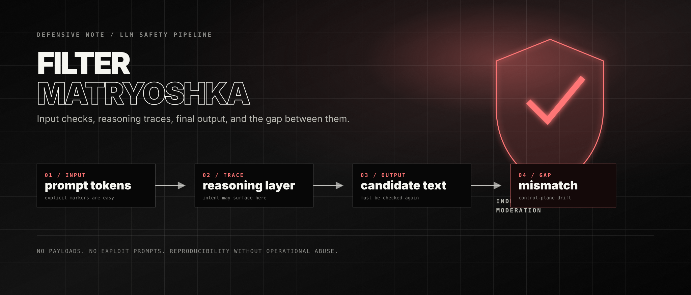

The Filter Matryoshka: Notes on Gemini Safety Layers
This is a defensive note about a strange moderation behavior I observed while comparing local and cloud LLMs in 2025–2026. The payloads and exact prompts are intentionally omitted. The useful part is not the bypass. The useful part is the architecture smell.
What I observed
The rough pattern was simple. If unsafe content was present directly in the incoming prompt, the request was blocked. If the model surfaced the unsafe intent in a visible reasoning or self-check trace, the run was also much more likely to be blocked. But in one class of tests, the incoming text stayed neutral, the reasoning trace did not expose the dangerous category, and the final answer still crossed a policy boundary.
That does not prove that Gemini has no output filtering. Google documentation explicitly describes response safety feedback, blocked candidates, and finish reasons such as SAFETY, SPII, and PROHIBITED_CONTENT. The more accurate conclusion is narrower: in some configurations, the final-output layer can appear weaker than the combined input + reasoning/self-check layer.
| Layer | What it catches well | Failure smell |
|---|---|---|
| Input moderation | Explicit markers in user text | Neutral social framing can hide intent |
| Reasoning / self-check | Intent that becomes explicit during planning | If the trace stays clean, the signal may disappear |
| Final-output moderation | Generated unsafe text after decoding | May miss cases not pre-announced by earlier layers |
| Application policy | Domain-specific rules and escalation | Often absent in quick prototypes |
Why reasoning changes the picture
Reasoning is usually discussed as a quality feature: better planning, better code, better math, better decomposition. But from a safety perspective it can also behave like an intent-detection surface. If the model says, even internally or in a summarized trace, what it is about to do, the surrounding system has a much easier time classifying the run.
This creates a subtle dependency. A product may look safer when reasoning is on because unsafe intent becomes visible earlier. The same product may become less predictable if reasoning is hidden, minimized, summarized too aggressively, or shaped by instructions that interfere with the trace format. That is not a reason to expose private chain-of-thought. It is a reason to avoid treating reasoning as the only safety tripwire.
The control-plane problem
The most interesting part is not the content category. It is the architectural boundary. Prompt checks and reasoning checks belong to the control plane: they decide whether the run should continue. Final-output moderation belongs to the data plane: it inspects the artifact that will actually leave the system.
A robust safety system should not allow the data plane to become less protected just because the control plane did not see a bad signal earlier. The final answer is what the user receives. Therefore the final answer deserves its own strong, independent moderation pass.
What I would log in a responsible report
The test should be reproducible without publishing an operational jailbreak. That means the report should describe the shape of the failure, not provide a ready-to-use exploit string.
- model name, endpoint, date, region, and API/UI mode;
- safety settings and blocking thresholds;
- whether thinking/reasoning was on, off, minimal, or automatic;
- whether streaming was used;
- whether
promptFeedbackwas empty or blocked; - whether the final candidate had
finishReason: STOPor a safety finish reason; - whether
safetyRatingsincluded the relevant category and probability; - how many repeated runs reproduced the mismatch.
What the fix probably looks like
The defensive lesson is not “never use reasoning” and not “filtering is fake”. The lesson is to make moderation layered and independent:
- check the prompt before generation;
- use reasoning summaries or internal traces as additional signal, not as the only signal;
- moderate the final text that will be delivered to the user;
- treat tool calls, agent outputs, and streaming chunks as separate surfaces;
- log enough metadata to diagnose false negatives without storing unnecessary sensitive content.
The scary version of the bug is a system where the model is safe only when it happens to confess the unsafe plan before answering. That is not a reliable safety boundary. A safe product should catch the final artifact even when the path toward it looked harmless.
Sources
Матрёшка фильтров: заметки о safety-слоях Gemini
Это defensive-заметка о странном поведении модерации, которое я заметил при сравнении локальных и облачных LLM в 2025–2026 году. Payload-ы и точные промпты намеренно не публикуются. Полезная часть тут не в обходе, а в архитектурном запахе.
Что наблюдалось
Общий паттерн был простой. Если небезопасное содержимое было прямо во входящем prompt-е, запрос блокировался. Если модель выносила небезопасное намерение в видимую reasoning-трассу или self-check, запуск тоже заметно чаще блокировался. Но в одном классе тестов входящий текст оставался нейтральным, reasoning-трасса не подсвечивала опасную категорию, а финальный ответ всё равно пересекал policy-границу.
Это не доказывает, что у Gemini вообще нет фильтрации output-а. Документация Google прямо описывает response safety feedback, заблокированные candidate-ы и причины остановки вроде SAFETY, SPII и PROHIBITED_CONTENT. Более точный вывод уже: в некоторых конфигурациях финальный output-слой может выглядеть слабее, чем связка input + reasoning/self-check.
| Слой | Что хорошо ловит | Запах сбоя |
|---|---|---|
| Input moderation | Явные маркеры в тексте пользователя | Нейтральная социальная рамка может скрыть намерение |
| Reasoning / self-check | Намерение, которое стало явным на этапе планирования | Если трасса чистая, сигнал может исчезнуть |
| Final-output moderation | Сгенерированный небезопасный текст после decoding-а | Может пропустить случаи, не объявленные ранними слоями |
| Application policy | Доменные правила и escalation | Часто отсутствует в быстрых прототипах |
Почему reasoning меняет картину
Reasoning обычно обсуждают как функцию качества: лучшее планирование, лучший код, лучшая математика, лучшая декомпозиция. Но с точки зрения safety он может работать ещё и как поверхность intent detection. Если модель, даже внутри или в summary-трассе, формулирует, что собирается сделать, внешней системе намного проще классифицировать запуск.
Из-за этого появляется тонкая зависимость. Продукт может выглядеть безопаснее с включённым reasoning, потому что опасное намерение становится видимым раньше. Тот же продукт может стать менее предсказуемым, если reasoning скрыт, минимизирован, слишком грубо суммаризируется или ломается пользовательскими инструкциями, которые вмешиваются в формат трассы. Это не аргумент за раскрытие private chain-of-thought. Это аргумент против того, чтобы считать reasoning единственным safety-трипвайром.
Проблема control plane
Самая интересная часть тут не в категории контента, а в архитектурной границе. Проверка prompt-а и проверка reasoning-а относятся к control plane: они решают, можно ли продолжать запуск. Модерация финального output-а относится к data plane: она проверяет артефакт, который реально уйдёт пользователю.
Надёжная safety-система не должна оставлять data plane менее защищённым только потому, что control plane раньше не увидел плохой сигнал. Финальный ответ — это то, что получает пользователь. Значит, финальный ответ должен проходить собственный сильный и независимый moderation-pass.
Что стоит логировать в ответственном отчёте
Тест должен быть воспроизводимым, но не должен превращаться в готовый эксплуатационный jailbreak. Поэтому отчёт описывает форму сбоя, а не публикует готовую строку для обхода.
- название модели, endpoint, дата, регион и режим API/UI;
- safety settings и blocking thresholds;
- был ли thinking/reasoning включён, выключен, минимален или автоматический;
- использовался ли streaming;
- был ли
promptFeedbackпустым или заблокированным; - был ли у финального candidate-а
finishReason: STOPили safety-причина; - содержал ли
safetyRatingsнужную категорию и вероятность; - сколько повторных прогонов воспроизводили рассинхрон.
Как, вероятно, чинить
Defensive-вывод не в том, что reasoning нельзя использовать, и не в том, что фильтрация фейковая. Вывод в том, что модерация должна быть многослойной и независимой:
- проверять prompt до генерации;
- использовать reasoning summaries или внутренние трассы как дополнительный сигнал, а не единственный сигнал;
- модерировать финальный текст, который будет показан пользователю;
- считать tool calls, agent outputs и streaming chunks отдельными поверхностями;
- логировать достаточно metadata для диагностики false negative, не сохраняя лишний чувствительный контент.
Страшная версия бага — это система, где модель безопасна только тогда, когда случайно “созналась” в небезопасном плане до ответа. Это ненадёжная safety-граница. Безопасный продукт должен ловить финальный артефакт даже тогда, когда путь к нему выглядел безобидным.